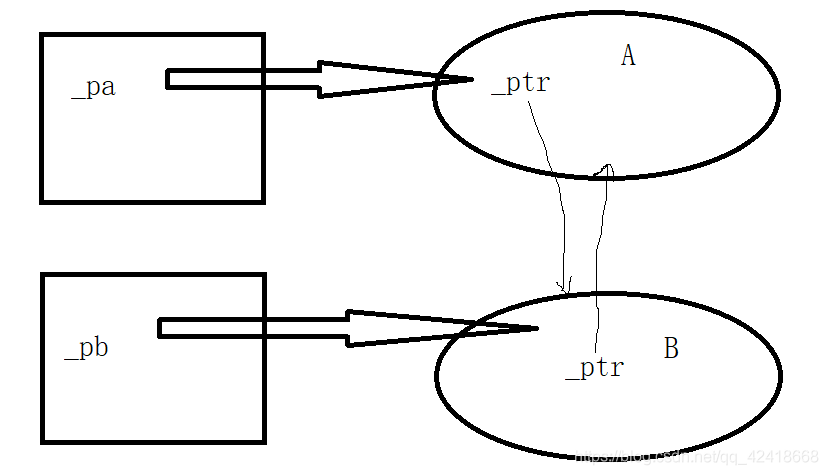

智能指针类
智能指针
面试时候面的比较多的问题就是关于智能指针的问题,所以在这边自己整理一下,主要参考的文献就是C++ Primer
C++中动态内存的管理通过一对运算符来完成: new,在动态内存中为对象分配空间并返回一个指向该对象的指针; delete, 接受一个动态对象的指针,销毁该对象,并实现更与之关联的内存.
因为这俩比较不靠谱,所以在新的标准中多了智能指针这个东西.
shared_ptr允许多个指针指向同一个对象;
unique_ptr则"独占"所指向的对象;
weak_ptr是一个伴随类,指向shared_ptr指向的对象.
shared_ptr类
最安全的分配和使用动态内存的方法是使用make_shared的标准库函数.该函数在动态内存中分配一个对象并且初始化它,返回指向此对象的shared_ptr.
使用make_shared时候,必须要制定想要创建对象的类型,定义方式和模板类相同:
1 | // 指向一个值为42的int的shared_ptr |
和emplace一致,make_shared使用其参数来构造给定类型的对象.
拷贝和赋值
在进行拷贝和赋值时候,每一个shared_ptr都会记录有多少个其他shared_ptr指向相同的对象
1 | shared_ptr<int> p = make_shared<int>(42); // p指向的对象只有p一个引用者 |
每一个shared_ptr都有一个引用计数来记录对象的数目, 无论何时去拷贝一个shared_ptr,计数器都会递增. 同样,如果改变一个shared_ptr指向的对象或者是被销毁,那么计数器递减. 如果等于零,那么就会自动释放自己所管理的对象.
所以引用计数更多的就是关于对象的一个属性,一个有多少shared_ptr指向的属性.
1 | auto r = make_shared<int>(42); // r指向的int只有一个引用者 |
销毁和释放
当指向对象最后的一个shared_ptr被销毁时候,shared_ptr类会自动销毁这个对象. 这里就是使用智能指针类中的析构函数来实现的.
在shared_ptr中, 其析构函数会递减它所指向的对象的引用计数.如果引用计数变成0,那么析构函数就会销毁掉对象,并释放其占用的内存.
shared_ptr可以自动释放其关联的内存,书上p403页详细解释了一个例子.其说明了最重要的一点就是shared_ptr类保证只要有任何shared_ptr对象引用它,他就不会被释放掉
多个对象中共享数据
使用动态内存的一个常见原因就是可以允许多个对象共享相同的状态, 这时候可以使用shared_ptr来进行管理,例子见p405
unique_ptr
一个unique_ptr"拥有"它所指向的对象, 某个时刻一个unique_ptr只能指向一个给定的对象. 当unique_ptr被销毁时候,它所指向的对象也被销毁
相比于shared_ptr, unique_ptr并没有make_shared这样的函数来初始化. 初始化unique_ptr必须采用直接初始化的模式:
1 | unique_ptr<int> p2(new int (42)); |
由于unique_ptr拥有它所拥有的对象,因此unique_ptr不支持普通的拷贝或者赋值的操作.
1 | unique_ptr<int> p1(new int (42)); |
虽然不能拷贝和赋值unique_ptr, 但是可以通过调用release或者reset将指针的所有权从一个(非const) unique_ptr转移到另一个unique上
1 | unique_ptr<int> p1(new int (42)); |
release成员返回unique_ptr当前保存的指针并将其清空. 因此, p2被初始化为p1原来保存的指针,而p1置为空.
reset成员接受一个可选的指针参数, 令unique_ptr重新指向给定的指针, 如果unique_ptr不为空,它原来指向的对象被释放.
调用release会切断unique_ptr和他原来管理的对象之间的联系, 不可以单纯的就使用release,会导致资源释放不了
1 | p2.release(); // 错误: p2不会释放内存,并且丢失了指针 |
同样,和shared_ptr一致,也可以自己定义delete指针的方式,传递不同的删除器
weak_ptr
weak_ptr是一种不控制所指向对象生存期的智能指针, 指向一个shared_ptr管理的对象. 讲一个weak_ptr绑定到一个shared_ptr不会改变sahred_ptr的引用计数
创建一个weak_ptr必须要使用一个shared_ptr来进行初始化:
1 | auto p = make_shared<int>(42); |
因为对象可能是不存在的,所以不能直接使用weak_ptr直接访问对象, 必须使用lock函数. lock检查weak_ptr指向的对象是否仍然存在.
如果存在,lock返回一个指向共享对象的shared_ptr, 不存在返回null;
1 | if(shared_ptr<int> np = wp.lock()) // 如果np不为空则条件成立 |
所以,使用weak_ptr中的lock可以检查对象,有利于程序的正确运行
weak_ptr更多就是一种monitor,来监控shared_ptr管理的对象
补充
shared_ptr就意味着你的引用和原对象是一个强联系, 你的引用不解开，原对象就不能销毁, 所以极其容易造成内存的泄露;shared_ptr是C++内存管理机制的一种放松。但放松绝不意味着可以滥用，否则最后的结局恐怕不会比裸指针到处申请了不释放更好。- 滥用强联系可能造成循环引用的灾难。即：
B持有指向A内成员的一个shared_ptr，A也持有指向B内成员的一个shared_ptr，此时A和B的生命周期互相由对方决定，事实上都无法从内存中销毁。 - 从语义上来说，
shared_ptr代表了一种对生命周期的自动推断。其本质的意义是：A持有B的shared_ptr，代表B的生命周期反而完全覆盖了A。以树形结构的层级来理解，指针持有者是下级，指针指向的目标反而才是上级——下级短命，上级长存；上级不存，下级焉附。 weak_ptr提供一个（1）能够确定对方生存与否（2）互相之间生命周期无干扰（3）可以临时借用一个强引用（在你需要引用对方的短时间内保证对方存活）的智能指针。weak_ptr要求程序员在运行时确定生存并加锁，这也是逻辑上必须的本征复杂度——如果别人活的比你短，你当然要：（1）先确定别人的死活（2）如果还活着，就给他续个命续到你用完了为止。- weak_ptr最大的作用就是防止循环引用
循环引用
1 |
|
运行结果:

在main函数栈区上定义的俩个智能指针所引用的资源都被正常的释放掉了
将代码修改如下,将类内ptr设定之后
1 | int main() |
结果:

可以发现,指针的内存没有被析构, 这也就是引用交叉的问题,造成内存上的泄露

一般使用weak_ptr来解决这个问题
1 |
|
输出结果为